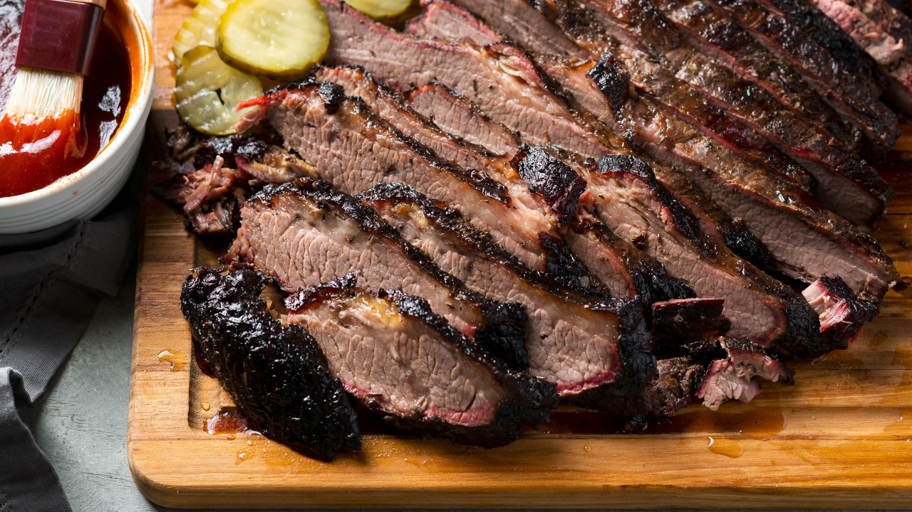

Smoked Brisket
Return to Recipes

Description
A traditional BBQ dish with a slow cooked brisket cut on the smoker.
Ingredients
- One 8-to-9-pound brisket flat
- ¼ cup kosher salt
- 1½ tablespoons freshly ground black pepper
- 1 tablespoon dark brown sugar
- 2 teaspoons Aleppo pepper flakes
- 2 teaspoons garlic powder
- 2 teaspoons cumin
- Two 9-by-13-inch aluminum pans, for smoking
- 8 cups water, for smoking
- Lump charcoal, for smoking
- Hickory wood, for smokingSpray bottle, for smoking
- ½ cup apple juice
- ½ cup apple cider vinegar
- Butcher’s paper, for smoking
- White bread, for serving
- Barbecue sauce, for serving
- Pickles, for serving
- Coleslaw, for serving
- Potato salad, for serving
Instructions
- Place the brisket on a large baking sheet and pat dry with paper towels. In a small bowl, mix together the salt, pepper, brown sugar, pepper flakes, garlic powder and cumin. Rub the spice mix all over the brisket and let sit for 1 hour while you prepare the smoker.
- In a barrel smoker, place a 9-by-13-inch aluminum pan underneath the grill grates on the side opposite the firebox. Place another pan on top of the grate closest to the firebox and fill it with the water. Light a chimney starter full of lump charcoal and let burn until bright red, about 10 to 15 minutes. Fill the firebox with the hot charcoal and top with 3 pieces of hickory wood. Keep the lid open until the wood catches fire. Using tongs, turn the wood and close the lid. Maintain a temperature of 250º in your smoker.
- Place the brisket on the grate directly over the empty aluminum pan. Close the grill lid and smoke until the meat is dark in color, about 6 hours.
- Every hour, add more wood to maintain the fire. In a spray bottle, combine the apple juice and apple cider vinegar, and liberally spray the brisket, working quickly as to not let heat escape. Spray the brisket each time you refresh the wood.
- After 6 hours, remove the brisket from the smoker and wrap tightly in butcher's paper. Return to the smoker and cook until the brisket has reached an internal temperature of 200º, another 2 to 3 hours. Continue refreshing the wood every hour. Remove the package and transfer to a cutting board. Let the meat rest, still wrapped in the paper, for 1 hour.
- Unwrap the brisket and slice against the grain. Serve atop slices of white bread with barbecue sauce, pickles, coleslaw and potato salad.